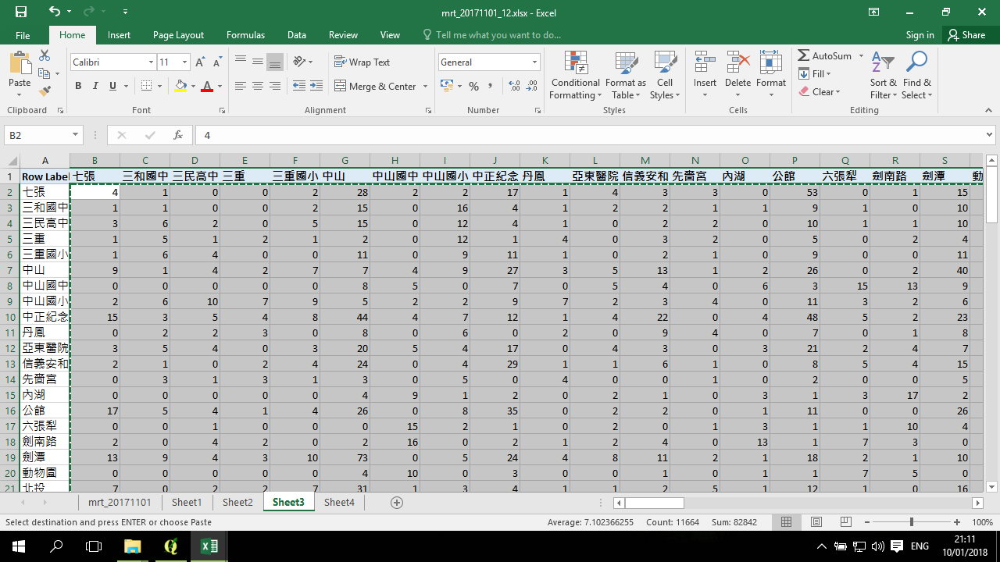

呈現空間流動 (FlowMapper) -- 資料準備
流動資料通常是以兩種形式來呈現，一個是 link-list，類似:
| Origin(出發地) | Destination(目的地) | Flow (流量) |
|---|---|---|
| a | b | 30 |
| a | c | 15 |
| b | d | 20 |
| d | c | 15 |
| b | a | 3 |
| ... | ... | ... |
或是，OD 矩陣，類似：
| OD | a | b | c | d | ... |
|---|---|---|---|---|---|
| a | 0 | 30 | 15 | ... | ... |
| b | 3 | 0 | ... | 15 | ... |
| c | ... | ... | 0 | ... | ... |
| d | ... | ... | 15 | 0 | ... |
| ... | ... | ... | ... | ... | ... |
上述兩種資料型態來儲存流動資料。
另一方面，為了繪製流動地圖，流動的起迄點的座標資料也需要準備。以下會分別說明這兩組資料的準備。
工具
在 QGIS 可以用 FlowMapper 套件來將流動資料繪製成流動網絡地圖。這套件所使用的資料主要是 OD 矩陣形式，所以在這小節將說明一種方式來將資料準備好。

流量資料
章節將應用臺北市捷運流動資料進行示範：
捷運OD流動資料可以從這裡下載。
教學用的是 2017/12/01 - 12pm 的資料，下載的資料是一整個月的資料，所以如果是自行下載的話，需要先作資料的過濾。
資料剖析
樞紐分析
選擇只有進站(出發地)、出站(目的地)、及人次(流量)，這三個欄位，準備用樞紐分析：
在樞紐分析的分頁中，左邊是準備出結果的地方，右邊是設定的地方：
將進站拉到 ROWS， 出站拉到 COLUMNS，流量人次拉到 VALUES，預設 VALUES 中的人次是 Count (計次)，所以表單出現的都是 1；點旁邊的向下箭投，改成 Sum (加總)：
將只有矩陣的部分，進行複製：

起迄位置資料
起迄位置是捷運站的 X 與 Y 座標：
這份資料是已經整理好捷運站名稱與座標系統的轉換，因此可以直接使用。
資料來源是 交通部交通路網數值網，原始資料是捷運出口位置，這裡預先整理成同一站各出口的平均中心位置。
因為 FlowMapper 套件必須讓點的順序與矩陣的行、列的順序一致，因此這裡用 Excel 的 VLOOKUP 來將資料對齊：
然後，將資料複製，並貼上值 (貼上的時候點右鍵，選貼上值，因為前面是用 VLOOKUP 公式來產生的資料)：
儲存資料
FlowMapper 所讀入的資料必須是純文字的，以 tab 為分隔 的 .txt 檔。
因此，在儲存的時候，選擇「文字檔(Tab 字元分隔)(*.txt)」：
在資料準備的章節，最後的成果是兩個 .txt 檔案，分別記錄一個是矩陣，一個是位置，兩者的順序必須一致。